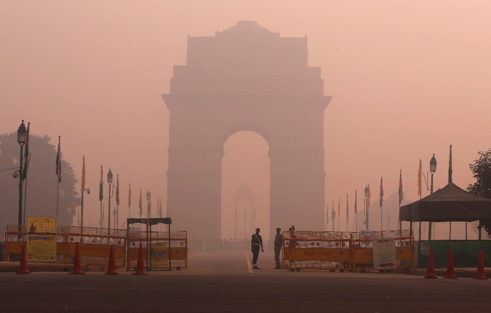

← Sustainable Planning & Environment
Air quality · Urban planning · City scale
How much growth can Delhi's air take?
Carrying Capacity of Air Environment, NCT Delhi · At SPA Delhi, for the Delhi Pollution Control Committee · 2020–21
Delhi has some of the most polluted air of any big city, and it keeps growing. How much more activity can its air carry, and which land uses drive the pollution?
What I did
- Built city-level emission inventories by sector, and projected emission loads from population growth.
- Mapped activities around 37 air monitoring stations in GIS to trace likely pollution sources.
- Studied how the COVID lockdown changed pollution trends.
- Built a spatial carrying capacity framework for the city's air.
- Wrote SOPs and an action plan linking land uses to targeted pollution cuts, including where to site industry.
Result
A carrying capacity framework and action plan for the Delhi Pollution Control Committee (DPCC). Transport was the biggest contributor among the land uses studied. The work was later published as a book chapter (CRC Press, 2022).
